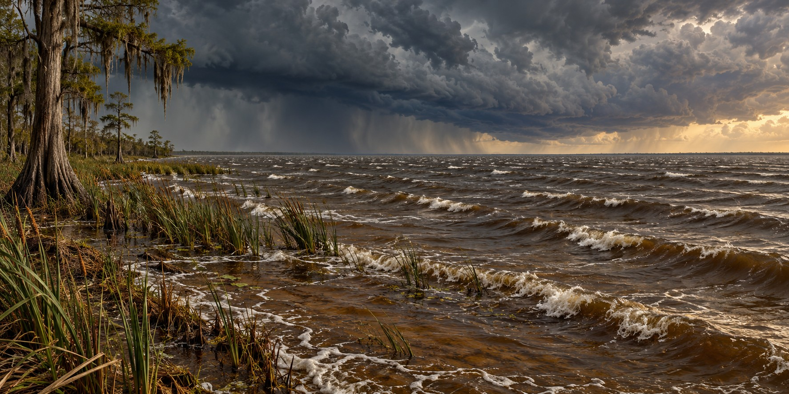

Why Lake Okeechobee Became Dangerous
A Lake the Size of a Small Sea, Only Nine Feet Deep

Stand on the shore of Lake Okeechobee and you cannot see the other side. The lake spans 730 square miles, the largest freshwater lake in Florida and one of the largest in the southeastern United States, big enough that early Seminole speakers named it “big water.” Wade out from the shore, though, and the lake’s real character appears almost at once: its average depth is only about nine feet. That combination explains both the disaster of 1928 and a very different water crisis today.
A Saucer, Not a Bowl
The lake occupies a broad, shallow basin. A long stretch of open water gives wind room to act on its surface. Fetch is the distance over which wind blows across water without an intervening shoreline; greater fetch can allow larger waves to develop.
Why Shallow Water Makes It Worse
It seems a shallow lake should be safer than a deep one. In a hurricane the opposite can be true. A steady wind pushes water toward the downwind shore, and in a shallow basin that water has little depth to move through, so it piles up against the shore instead of spreading out. It is the same principle as storm surge on Florida’s shallow Gulf shelf, compressed into a landlocked basin, and it is how the original mud embankments were overwhelmed in 1926 and 1928.
A Lake That Used to Spread Out
Before the dike enclosed the lake, water levels rose to 16 to 20 feet above sea level in wet periods and simply spread into the surrounding marsh, supporting abundant fish and birds across a larger, fluctuating area. Today University of Florida research shows that levels above 16 feet produce waves strong enough to tear up shoreline marsh vegetation that the lake’s littoral zone depends on.
The Pressure Valve Nobody Wanted to Open
Historically, seepage through the Herbert Hoover Dike complicated decisions about high lake levels. Rehabilitation completed in early 2023 reduced that risk, but managers still have to balance flood protection, water supply and ecosystem needs. Releases through the Caloosahatchee and St. Lucie systems can carry nutrient-rich freshwater into estuaries, where salinity changes and blooms can cause ecological harm.
When the Rivers Turned Green
A 2005 discharge-linked bloom in the St. Lucie Estuary showed the pattern. In 2016, a toxic bloom covering the lake and spreading into the St. Lucie River led Governor Rick Scott to declare a state of emergency in four counties. In 2018 a second comparable crisis flushed toxic algae down the Caloosahatchee. Peer-reviewed research on 2016 found microcystin, a liver toxin, along with other cyanotoxins. Hurricane Irma’s 2017 rains flushed more nutrients into the lake’s watershed, which researchers link to fueling the 2018 bloom.
One Lake, Two Dangers
The 1928 hurricane and later algae crises are different consequences of managing a large shallow lake within a changed landscape. The dike reduced the risk of catastrophic lake flooding, while canals altered where excess water could go. Restoration aims to improve storage, treatment and movement of water south, reducing the need for damaging estuary releases.
Quick Facts
| Surface area | 730 square miles; largest freshwater lake in Florida |
|---|---|
| Depth | Average about 9 feet |
| Fetch | Open water gives wind a long distance to act on the surface |
| Discharge outlets | Caloosahatchee River (west) and St. Lucie River (east) |
| Algae crises | 2005, 2016 and 2018; state of emergency in four counties, 2016 |
Did You Know?
The lake’s name comes from a Hitchiti/Seminole phrase meaning “big water.”
Lake Okeechobee’s wind-driven fetch is comparable to a stretch of open ocean.
Hurricane Irma’s rains helped fuel the following year’s algae bloom.
Vocabulary
Fetch: the open-water distance over which wind can build waves.
Littoral zone: the shallow, near-shore area of a lake where plants grow.
Cyanobacteria: bacteria, also called blue-green algae, that can produce toxins.
Discussion Questions
1. Why can a shallow lake be more dangerous in a hurricane than a deep one?
2. How can reducing flood risk in one place create water-management problems elsewhere?
Related Articles
FLH-0004 — The Okeechobee Hurricane of 1928
FLH-0026 — Building the Herbert Hoover Dike
FLH-0025 — The Flood That Changed South Florida
FLH-0028 — Hurricanes and the Everglades
FLH-0029 — Take Care of the Water
Sources
South Florida Water Management District. “Lake Okeechobee.” sfwmd.gov
Florida Fish and Wildlife Conservation Commission. “Lake Okeechobee.” myfwc.com
UF/IFAS Extension. “Managing High Water Levels in Florida’s Largest Lake: Lake Okeechobee.” (credit Karl Havens). ask.ifas.ufl.edu
Kramer, B.J., et al. “Nitrogen Limitation, Toxin Synthesis Potential, and Toxicity of Cyanobacterial Populations in Lake Okeechobee and the St. Lucie River Estuary, Florida, During the 2016 State of Emergency Event.” PLOS ONE, 2018.
Captains For Clean Water. “The Various Impacts of Lake Okeechobee Discharges.” captainsforcleanwater.org
Circle of Blue. “Toxic Algae Flourish As Everglades Solution Eludes Florida.” circleofblue.org
Wikipedia. “Lake Okeechobee.”
SFWMD — Lake Okeechobee facts and management